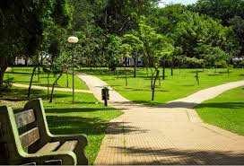

Parque Vaca Brava
O Parque Sulivan Silvestre, mais conhecido como Parque Vaca Brava, está localizado na cidade de Goiânia, Goiás. Ocupa uma área de 79.800 metros quadrados e contém um extenso lago e um pequeno bosque com espécie nativa de fauna e flora. Conta com uma pista de cooper que o rodeia e por onde caminham centenas de pessoas diariamente. Existem à sua volta lojas, bares, restaurantes, colégios, clínicas, um hospital e edifícios residenciais, além do Goiânia Shopping. É frequentado por pessoas de todas as idades durante os finais de semana interessados em desfrutar da sua extensa área verde. É famoso pelo seu chafariz, considerado uma das atrações do parque. Sua localização no centro da cidade é ambiente de encontros e shows ao vivo.
Veja mais do Parque Vaca Brava em Goiânia: Vaca Brava